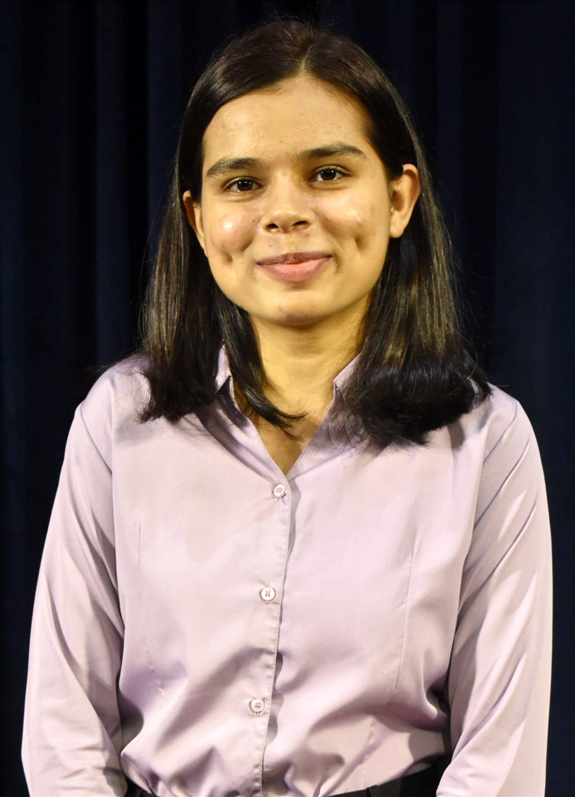

Indrayani Vaishnav

Summary
I'm a dedicated electrical engineering student with a passion
for coding and problem-solving. I'm confident in my skills, and
I'm eager to embark on a successful career that allows me to explore
my interests and contribute to the ever-evolving world of technology.
Education
- Veermata Jijabai Technological Institute
B. Tech. Electrical Engineering 2021-2024
- Government Polytechnic, Aurangabad
Diploma, Electrical Engineering 2018-2021
- SSC
Ramchandra Naik School, Aurangabad
Experience
- In-Plant Training [online] June 2020 – July 2020
Luans Electronics, Aurangabad
- Studied and observed the working, construction and properties of different Electrical & Electronics components
and equipments
Projects
- Solar PV Generation For Residential Load
Degree 5th semester, December 2022
- Simulated the model using Matlab – Simulink
- Studied mainly about MPPT Charge Controller
- Dual Axis Solar Tracker
Diploma final year, 2021
- Enhanced the Solar Tracking System by making a dual axis model using Arduino
- Designed the structure of model and programmed the Arduino
Technical Skills
- Languages : C++, Java
- DS & ADS
- Full Stack
- Matlab -Simulink
- Autocad
Extra Curriculars
- TECHNOVANZA
- Robowars Event Head : 2022-23
- Marketing Executive : 2021-22
- PR Executive : 2021-22
Other